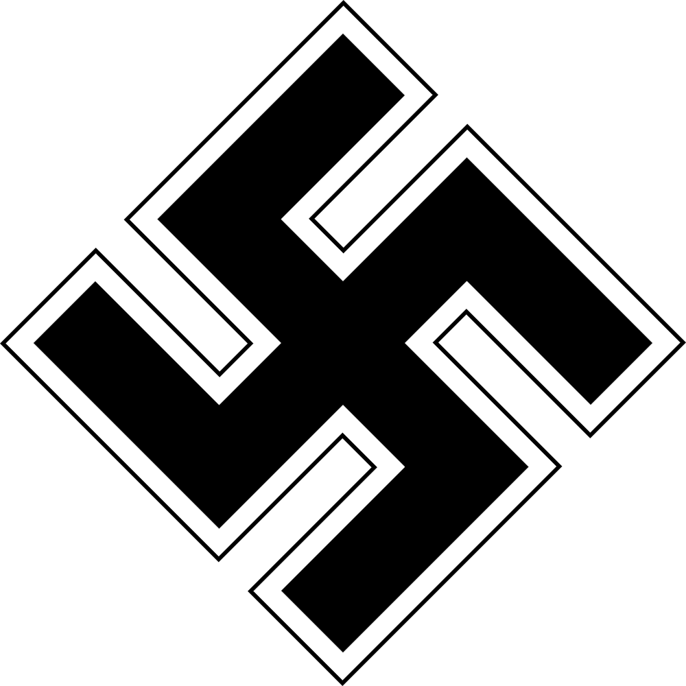
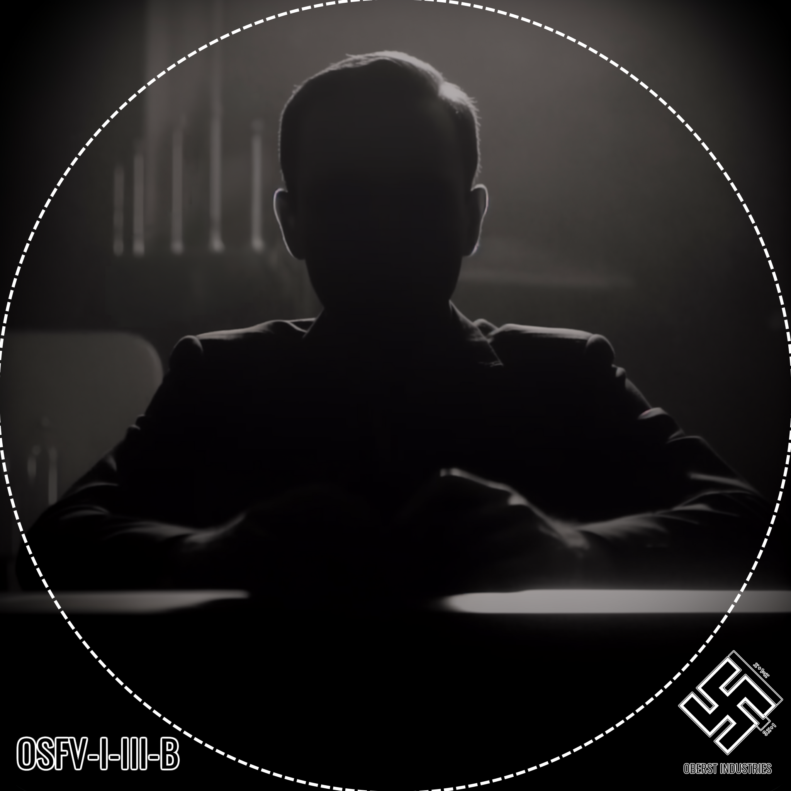
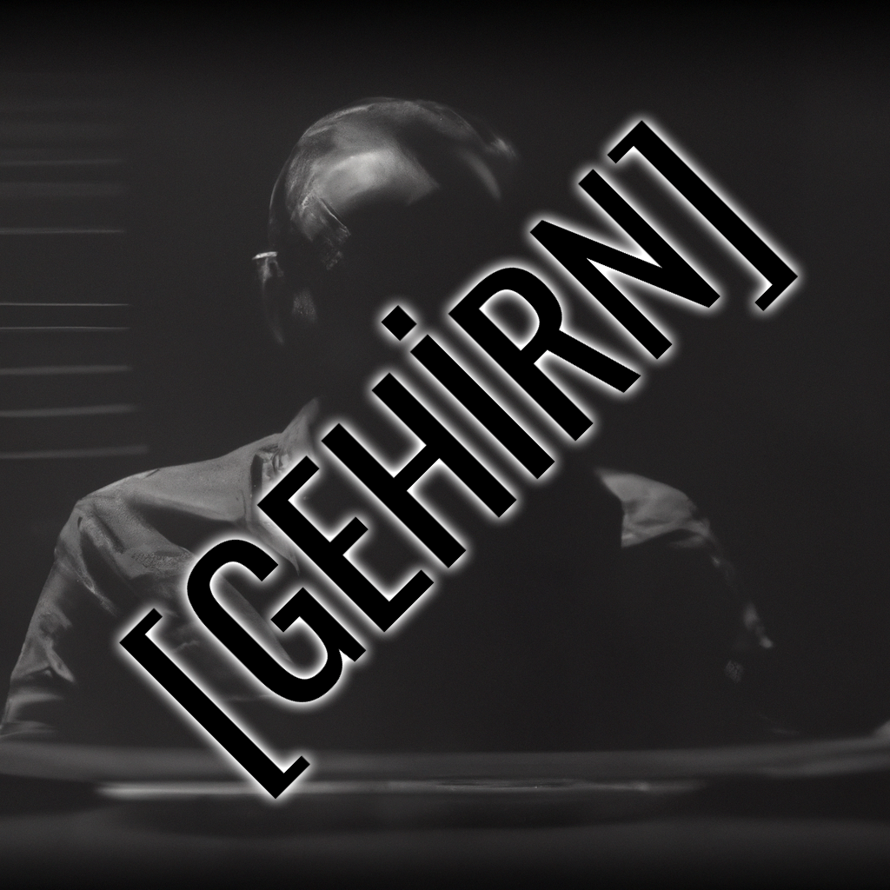

MAIN PAGE
PROPAGANDA
SERVICES
WANTED
DATA BASE
TERMINAL
JOIN/LOGIN THE SYSTEM
MISSIONS

GNAC MISSIONS LIST
CLASSIFIED MISSION DETAILS
SCHNİTTER KRAZGREİCH
PRIMARY MISSIONS:
I-
[GİZLENDİ]
[SONA ERECEK: 19.03.2024 - 20:00]
II- VERTSCHAFT'I YÖNETMEK, İDARE ETMEK VE BÜYÜTMEK
[SONA ERECEK: 01.10.2025 - 20:00]
SECONDARY MISSIONS:
I- TASARIM ÇALIŞMALARI ÜZERİNDE OBERFÜHRER'E YARDIM ETMEK
[SONA ERECEK: 01.10.2025 - 20:00]
II- HAKİKAT, DÜŞÜNCE VE ÖNCELİK KONULARINDA GNAC STANDARTLARINA UYAN BİR HALE BÜRÜNMEK
[SONA ERECEK: 01.10.2025 - 20:00]
SIDE MISSIONS:
I- BOŞ VAKİTLERDE KENDİNİ TASARIM, İSTİHBARAT, ORGANİZASYON VB. ALANLARDA GELİŞTİRMEK
[SONA ERECEK: 01.10.2025 - 20:00]

SCHWARZER KRAZGREİCH
PRIMARY MISSIONS:
I- VERTSCHAFT'I YÖNETMEK, İDARE ETMEK VE BÜYÜTMEK
[SONA ERECEK: 19.03.2024 - 20:00]
SECONDARY MISSIONS:
I- TASARIM ÇALIŞMALARI ÜZERİNDE OBERFÜHRER'E YARDIM ETMEK
[SONA ERECEK: 01.10.2025 - 20:00]
II- HAKİKAT, DÜŞÜNCE VE ÖNCELİK KONULARINDA GNAC STANDARTLARINA UYAN BİR HALE BÜRÜNMEK
[SONA ERECEK: 01.10.2025 - 20:00]
SIDE MISSIONS:
I- BOŞ VAKİTLERDE KENDİNİ TASARIM, YAZILIM, ORGANİZASYON, İSTİHBARAT VB. ALANLARDA GELİŞTİRMEK
[SONA ERECEK: 01.10.2025 - 20:00]
ARCHADAS
PRIMARY MISSIONS:
I- ÜNİVERSİTE İLE İLGİLİ KONULARDAN UZAKLAŞIP GNAC'A ODAKLANABİLECEK BİR HALE AKTARIM SAĞLAMAK
[SONA ERECEK: 20.04.2024 - 20:00]
SECONDARY MISSIONS:
I- TASARIM ÇALIŞMALARI ÜZERİNDE OBERFÜHRER'E YARDIM ETMEK
[SONA ERECEK: 01.10.2025 - 20:00]
II- HAKİKAT, DÜŞÜNCE VE ÖNCELİK KONULARINDA GNAC STANDARTLARINA UYAN BİR HALE BÜRÜNMEK
[SONA ERECEK: 01.10.2025 - 20:00]
SIDE MISSIONS:
I- BOŞ VAKİTLERDE KENDİNİ TASARIM, YAZILIM, MÜHENDİSLİK, TIBBİ VB. ALANLARDA GELİŞTİRMEK
[SONA ERECEK: 01.10.2025 - 20:00]
WALTER ANWÄRTER
PRIMARY MISSIONS:
I- OBERSCHWELL'E SÖZ VERİLEN MİKTARDA PARAYI SAĞLAMAK
[BAŞARISIZ - PENALTI: DERANK]
II- MIKAEL EUGEN'İN RAPORUNU İNCELEYİP EV ADRESİNİ ÇIKARMAK
[SONA ERECEK: 20.12.2024 - 20:00]
SECONDARY MISSIONS:
I- VERTSCHAFT'I YÖNETMEK, İDARE ETMEK VE BÜYÜTMEK
[SONA ERECEK: 01.10.2025 - 20:00]
II- BAŞTA RAGNAR OLMAK ÜZERE NATİON SUNUCULARININ İCABINA BAKMAK
[SONA ERECEK: 20.04.2024 - 20:00]
SIDE MISSIONS:
I- TÜM FAALİYET GÖSTEREN MAFYA OLUŞUMLARININ LİSTESİNİ ÇIKARIP OBERSCHWELL'E TESLİM ETMEK
[SONA ERECEK: 20.06.2024 - 20:00]
II- BOŞ VAKİTLERDE KENDİNİ TASARIM, İSTİHBARAT VB. ALANLARDA GELİŞTİRMEK
[SONA ERECEK: 01.10.2025 - 20:00]

AKEROY
PRIMARY MISSIONS:
I- PROJECT: GEHİRN İÇERİSİNDE GEREKLİ YENİDEN DOĞUŞ VE REHABİLİTASYON'UN ARDINDAN TEKRAR GÖREVE BAŞINA GETİRİLME
[SONA ERECEK: 01.10.2025 - 20:00]
SECONDARY MISSIONS:
-
SIDE MISSIONS:
-